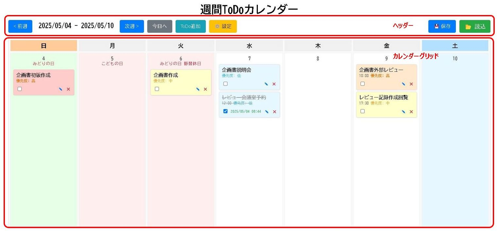
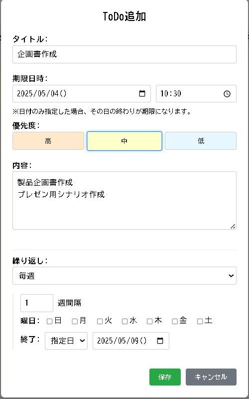
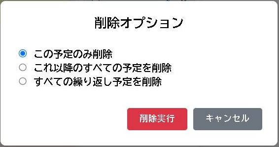
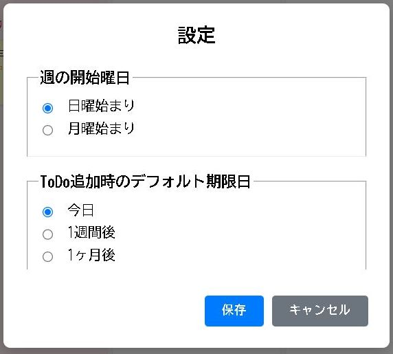

✅ 週間ToDoカレンダー (Weekly ToDo Calendar)
1週間を見渡しながらタスクを管理できるカレンダー形式のToDoリストです。
主な特徴
- 週間カレンダー表示: 1週間分のタスクを日付ごとに見やすく表示します。日曜始まり/月曜始まりを切替可能。
- ToDo管理: タイトル、期限日時、優先度（高/中/低）、詳細内容を設定できます。
- 繰り返し設定: 毎日、毎週（曜日指定）、毎月（日付指定）の繰り返しタスクを作成できます。繰り返しの終了日も設定可能です。
- 完了チェック: 各タスクにチェックを入れて完了状態を管理できます。完了日時も記録されます。
- 祝日・今日表示: カレンダーに日本の祝日と今日の日付をハイライト表示します。
- 設定保存: 週の開始曜日やデフォルトの期限日設定をブラウザに記憶させます。
- データ保存/読込: 作成したToDoリスト全体をJSONファイルとして保存・読み込みできます。
- 直感的な操作: ToDoの追加、編集、削除、完了チェックなどをダイアログやボタンで簡単に行えます。
使い方マニュアル
画面構成
- ヘッダー: アプリタイトルと各種操作ボタンがあります。
- 週ナビゲーション: < 前週, 次週 > ボタンと現在の表示週範囲。
- 今日へ: 今日の日付が含まれる週に移動します。
- ToDo追加: 新しいToDoを作成するダイアログを開きます。
- 設定: 週の開始曜日などを設定するダイアログを開きます。
- 保存: 現在のToDoデータをJSONファイルとして保存します。
- 読込: 保存したJSONファイルを読み込みます。
- カレンダーグリッド: 1週間分のカレンダーが表示されます。
- 曜日ヘッダー: 設定に基づいた曜日のヘッダー（日〜土 or 月〜日）。土日は背景色が変わります。
- 日付セル: 各日付のマス。日付番号、祝日名（該当する場合）、その日のToDoアイテムが表示されます。今日の日付は背景色が変わります。
- ToDoアイテム: 各日付に追加されたToDo。クリックで詳細表示、編集/削除ボタン付き。優先度に応じて背景色が変わります。期限切れで未完了のToDoは、今日のセルにまとめて表示されます。
基本的な使い方
- 週の移動: ヘッダーの < 前週 / 次週 > ボタン、または 今日へ ボタンで表示する週を切り替えます。
- ToDoの追加: ヘッダーの ToDo追加 ボタンをクリックし、開いたダイアログで情報を入力して 保存 をクリックします。
- ToDoの詳細表示/編集: カレンダー上のToDoアイテムをクリックすると詳細表示ダイアログが開きます。編集 ボタンを押すと編集モードになります。変更後 保存 をクリックします。
- ToDoの完了/未完了: ToDoアイテム内のチェックボックス をクリックして状態を切り替えます。完了すると完了日時が表示されます。
- ToDoの削除: ToDoアイテム右下のバツアイコン をクリックします。繰り返しToDoの場合は削除オプション（この予定のみ、これ以降、すべて）を選択するダイアログが開きます。
- 設定の変更: ヘッダーの 設定 ボタン をクリックし、週の開始曜日やデフォルトの期限日を設定して 保存 をクリックします。
ToDo詳細/編集/追加ダイアログ
- タイトル: ToDoの名称を入力します（必須）。
- 期限日時: 期限となる日付（必須）と時刻（任意）を指定します。日付のみの場合、その日の終わりが期限となります。
- 優先度: 高 中 低 から選択します。ToDoアイテムの背景色が変わります。表示モードでも変更可能です。
- 内容: ToDoの詳細な説明やメモを記入できます。
- 繰り返し設定 (新規追加時のみ):
- 「しない」「毎日」「毎週」「毎月」から選択します。
- 間隔（例: 2日ごと、3週間ごと）を指定できます。
- 毎週の場合は曜日を、毎月の場合は日付を指定します。
- 繰り返しの終了条件（なし、指定日）を設定できます。
- 完了情報 (表示モード): ToDoが完了している場合、完了日時が表示されます。
- ボタン:
- 追加/編集モード: 保存 / キャンセル ボタン
- 表示モード: 編集 / 閉じる ボタン
削除オプションダイアログ (繰り返しToDo)
繰り返し設定されたToDoを削除する際に表示されます。
- この予定のみ削除: クリックした日付のToDoだけを削除（除外）します。
- これ以降のすべての予定を削除: クリックした日付以降の繰り返しToDoをすべて削除します（繰り返しの終了日を前日に設定します）。
- すべての繰り返し予定を削除: 元のToDoテンプレート自体を完全に削除します。
設定ダイアログ
- 週の開始曜日: カレンダーの表示を「日曜始まり」または「月曜始まり」に切り替えます。
- ToDo追加時のデフォルト期限日: 新規ToDo作成時の期限日を「今日」「1週間後」「1ヶ月後」から選択できます。
データの保存と読込
- 保存: ヘッダーの保存ボタンをクリックすると、ToDoデータと設定情報を含むJSONファイルが
TD[日付時刻].jsonという名前でダウンロードされます。 - 読込: ヘッダーの読込ボタンをクリックし、保存したJSONファイルを選択します。現在の内容は上書きされます（確認ダイアログが表示されます）。設定情報もファイルの内容で更新されます。